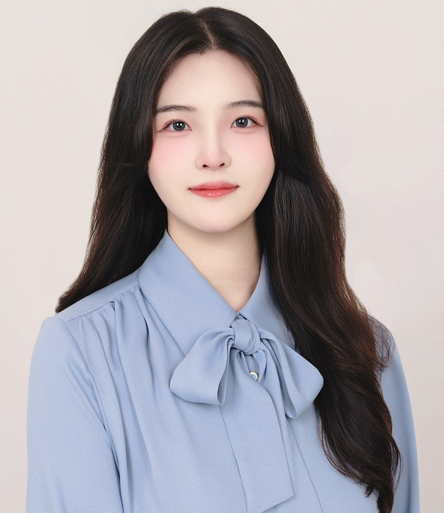

Seeing in three dimensions
Making perception robust where it is hardest — small objects, cluttered streets, incomplete depth. Detection, segmentation, and RGB-D / point-cloud representations for 3D scene understanding.
Undergraduate Researcher · Seoul
서해인
I study how machines see and read the world — computer vision, 3D scene understanding, and multimodal vision–language learning.
B.S. candidate in Data Science at Duksung Women's University (Mar. 2024 – Feb. 2028, GPA 3.94/4.5 in major), and an undergraduate research assistant at the DMKD Lab since January 2025. I am preparing for graduate study and would be glad to hear from researchers working on related problems.

Making perception robust where it is hardest — small objects, cluttered streets, incomplete depth. Detection, segmentation, and RGB-D / point-cloud representations for 3D scene understanding.
Vision–language models that reason over visually rich documents and turn pixels into structure: layout, semantics, and eventually action. Toward VLA systems that connect perception to decisions.
Retrieval, ontologies, and knowledge graphs as scaffolding for language models — so a prediction arrives with a reason a domain expert can check, from medicine to urban safety.
Journal Articles
Conference Proceedings
DMKD Lab
Undergraduate Research Assistant
Jan. 2025 – Present
Duksung Women's University, Seoul
Designed and implemented a street-view object detection pipeline integrated with urban spatial information for pedestrian risk-area analysis — covering dataset annotation, preprocessing, and model fine-tuning. Published in a KIPS journal and presented at the KIPS Annual Conference, where it received the Best Paper Award.
Developed a breast cancer diagnosis framework combining SAM-based lesion segmentation with VLM-based semantic interpretation, together with an XAI-driven clustering and prediction model for severity stratification.
Built VLM/LLM-based systems for complex document structure understanding (CoDU) and multimodal paper-to-code reconstruction (PRIME-K).
Contributed to an ETRI-commissioned AI image-editing software project and an NRF-funded research project, alongside model implementation, paper reviews, and lab seminars.
Awards & Honors
Scholarships & Certification
Leadership & Activities
Python, C, PyTorch, TensorFlow, scikit-learn
statsmodels, Pandas, NumPy, Matplotlib
Object detection, small-object detection, image segmentation, SAM-based segmentation, RGB-D processing, point cloud processing & completion, 3D scene understanding, visual representation learning
Multimodal learning, vision–language models (VLMs), vision–language reasoning, document understanding, multimodal document analysis, LLM, RAG, explainable AI (XAI)
Git, Docker, Ubuntu/Linux, Hugging Face, CUDA, Overleaf
vLLM, Ollama, OpenClaw
Relevant coursework — Introduction to Machine Learning (A+), Introduction to Deep Learning (A+), Big Data Visualization (A+), Data Processing (A+), Big Data Collection & Information Retrieval (A+), Introduction to Big Data (A+).
I am preparing for graduate study in computer vision and multimodal learning, and I am always happy to discuss research, collaborations, or reading recommendations. The fastest way to reach me is email.
angela040918@duksung.ac.kr